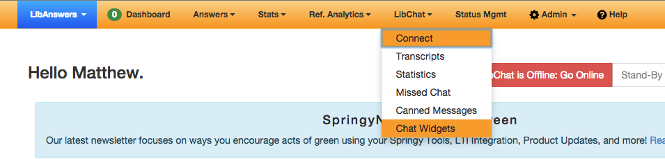
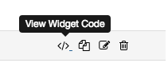
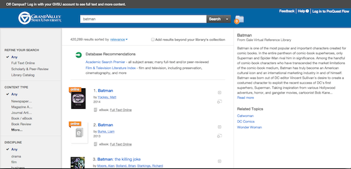

ProQuest's Summon 2.0 has a spot for LibChat settings in its Administration Screen, but it doesn't work. If you want to get your LibChat into Summon 2.0, you'll have to do it through Summon's custom JavaScript feature.
That's fine if you're a developer, or have experience with JavaScript? But what about the rest of the libraries? That's why I created this tool. In just a few steps, I'll help you get LibChat working in your Summon instance in 5 easy steps.
What you'll need:
A LibAnswers/LibChat account for your library
A login for your library's Serials Solutions Client Center, with Summon admin permissions
A web host where you can save a JavaScript file. Your library's CMS will probably work.
LibChat works by dynamically loading a chat "widget" from the Springshare servers into Summon. It knows which widget to load by giving each widget it's own "hash," which is a long string of random-looking characters. We'll need the hash for your widget so that we can load it in Summon.
Log in to LibAnswers
Click on 'LibChat' in the Orange header, then select 'Chat Widgets'
 Chat Widgets" />
Find the chat widget you want to use in the list, then click the "View Code" icon on the right.

Select the code from this box by clicking on the text and pressing Ctrl-C
I've generated the JavaScript file you need to load into Summon, but first, I'd like you to test it.
First, click in the box below and copy all the code by pressing Ctrl-C.
Now open up a new window or tab in your browser and go to your library's Summon site. Do a search so that you have a sceen with some results, like this:

I want you to open up your browser's "Developer Tools Console." In most browsers, you can right-click on the web page and click "Inspect Element," and then click the "Console" link. If you need help finding it, select your browser below and I'll show you where to find it:
Chrome
Firefox
Safari
Internet Explorer
You should see a chevron in the console with a cursor next to it. I want you to click next to that chevron and then paste the code you copied earlier. You can press Ctrl-V for that. Once you've pasted the code, hit enter.
Now move the Developer Tools window so you can see your Summon site. Do you have a chat button in the upper right hand corner, like this:
Summon needs to be able to load the JavaScript file we just created, so we need to get it somewhere on the internet. You can probably use your library's Content Management System (like Wordpress or Drupal) to host that. If you don't have access to that, then you can use Dropbox to host your script.
If you need more help, click on the system name below to learn how to upload your script.